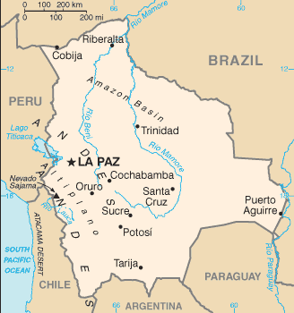
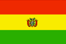

[Voir le carnet de route de la Bolivie]
Itinéraire prévisionnel :
 Lac Titicaca : Copacabana et Isla del Sol
Lac Titicaca : Copacabana et Isla del Sol
 Sorata : grotte de San Pedro
Sorata : grotte de San Pedro
 La Paz
La Paz
 Coroico : descendre en VTT la route de la mort
Coroico : descendre en VTT la route de la mort
 Rurrenabaque : excursion dans la jungle ou la pampa
Rurrenabaque : excursion dans la jungle ou la pampa
 Sources chaudes et geysers de Sajama
Sources chaudes et geysers de Sajama
 Uyuni : Salar d’Uyuni
Uyuni : Salar d’Uyuni
 Potosi
Potosi
 Sucre
Sucre
 Santa Cruz
Santa Cruz
 Quijarro
Quijarro
 
Superficie : 1 098 581 km² (2 fois la France)
Population : 8 500 000 habitants
Capitale : La Paz (1,4 million d’habitants) est le siège du gouvernement, Sucre (160 000 habitants) la capitale constitutionnelle
Peuples et ethnies : Indiens Quechuas 30%, métis 28% environ, Indiens Aymaras 25%, Européens 10% environ (principalement d’ascendance espagnole)
Langues : espagnol et langues indiennes (aymara et quechua)
Religion : catholique à 95%
Institutions politiques : démocratie
Principales activités : agriculture, stupéfiants, étain, gaz naturel.
La Bolivie fait partie des pays pauvres très endettés et dépend encore en grande partie des organismes multilatéraux comme la Banque Mondiale
Visa : non
Monnaie : le Boliviano (1€ = 10 Boliviano en 2004)
Budget quotidien : 15 à 24 US $/jour.
- Consulat :
12 av. du Président Kennedy, 75016 Paris.
Tél. : 01 42 88 34 32. Ouvert de 10h00 à 13h00.
Consulats à Lyon, Marseille et Bordeaux. - Maison de l’Amérique Latine
217 bd St Germain, 75007 Paris.
Tél. : 01 49 54 75 08.
http://www.mal217.org - Association Wayra (pour des infos)
21 rue Richelieu, 75001 Paris.
Tél. : 01 42 61 23 15. - Librairie Hispano-américaine 26 rue Monsieur Le Prince, 75006 Paris.
Ambasssade de France :
| Adresse | Avenida Hernando Siles 5390, Obrajes 6 |
| Ville | Casilla 824 La Paz |
| Téléphone | (591 2)786 114 / 786 138 |
| Fax | 591 2)786 746 |
| URL | http://www.ambafrance-bo.org |
Liste des médecins :
- Chirurgie :
Ville : La Paz
Nom : Dr. VARGAS Oscar
Adresse : Plaza Murillo
Téléphone : 32 22 24
Langues : Espagnol, anglais et français
Commentaire : Travaille à la "Caja Nal de Seguro"
- Dentiste :
Ville : La Paz
Nom : Dr. PALOMEQUE Franklin
Adresse : Calle Batallon Colorados, Ed. El Condor of 701
Téléphone : 35 54 13
Langues : Espagnol et anglais
Commentaire : Il faut compter une semaine d’attente pour avoir un rendez-vous. Il vaut mieux ne pas avoir une rage de dent !
Ville : La Paz
Nom : Dr. ROSSO Horacio
Adresse : Av 20 de Octubre Ed. Guadalquivir
Téléphone : 35 47 35
Langues : Espagnol et français
Commentaire : Il faut également attendre environ une semaine pour avoir un rendez-vous !!!!
- Généraliste :
Ville : La Paz
Nom : J.L. VALOT
Adresse : -
Téléphone : 32 54 52
Langues : -
Commentaire : -
Ville : La Paz
Nom : CEDINE
Adresse : -
Téléphone : 32 81 81
Langues : -
Commentaire : -
Ville : La Paz
Nom : NEUROCOMP
Adresse : -
Téléphone : 37 06 15
Langues : -
Commentaire : -
Ville : La Paz
Nom : Dr. VARGAS Enrique
Adresse : IBBA, C. Claudio Sanjinés
Téléphone : 36 11 25/34 14 25
Langues : Espagnol et anglais
Commentaire : -
- Hôpital :
Ville : La Paz
Nom : ALEMANA Clinic
Adresse : Av 6 de Agosto Final No.2216
Téléphone : 32 30 23
Langues : -
Commentaire : Qualité eds soins bonne
Ville : La Paz
Nom : Clinica DEL SUR
Adresse : Av. Hernando Siles, esq. 7 Obrajes
Téléphone : 78 40 02
Langues :
Commentaire : Ca va...
Ville : La Paz
Nom : METODISTA Clinic
Adresse : Av 14 de Septiembre No.5908
Téléphone : 78 35 09
Langues : -
Commentaire : C’est satisfaisant
Ville : Santa Cruz
Nom : Clinica FOIANINI
Adresse : Av. Irala 468
Téléphone : 591-3 36 22 11
Langues : -
Commentaire : Très bien équipé et très bonne qualité des soins
Ville : Santa Cruz
Nom : CAJA PETROLERA DE SALUD
Adresse : -
Téléphone : 591-3 36 22 11
Langues :
Commentaire : Qualité moyenne
Ville : Santa Cruz
Nom : JAPONES Hospital
Adresse : -
Téléphone : -
Langues : -
Commentaire : Moyen...
- Pharmacie :
Ville : La Paz
Nom : EL PRADO Farmacia
Adresse : Av. 16 de Julio 1898
Téléphone : 35 36 32
Langues : -
Commentaire : Le nombre de médicaments disponible y est limité
Ville : La Paz
Nom : OBRAJES Farmacia
Adresse : Calle 12 No. 5812 Obrajes
Téléphone : 78 20 81
Langues :
Commentaire : Quantité limitée de médicaments, mais c’est mieux que rien...